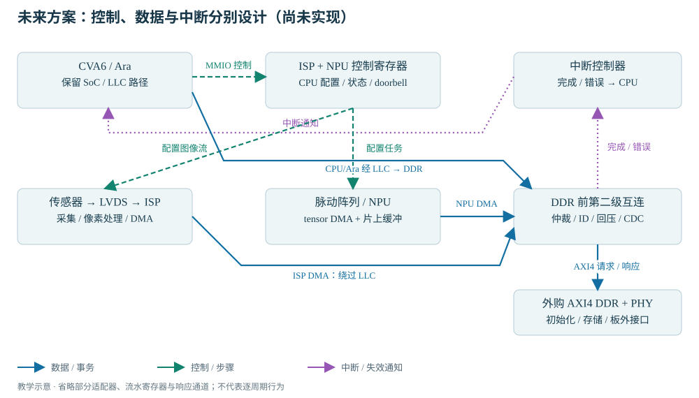

READ · TRACE · BUILD · EXPLAIN
07 · ASIC 迁移与 AI 系统规划
从可重现基线走向 ASIC；用明确假设估算模型容量和带宽。
解释静态源码清单和最小回归的价值；分清 FPGA 与 ASIC 资源；用模型参数计算容量和带宽预算。前置：完成前六章；这里是有边界的进阶导读，本轮不实施工程提取、IP 集成或架构冻结。
固定配置与静态源码清单
当每次构建都重新猜测 profile、依赖版本和宏时，“软件错了还是硬件变了”就难以区分。独立 cheshire_ara_asic/ 的目标是把一个明确配置、源码闭包、启动软件和可重复测试放在团队能维护的目录里。filelist 需要保存顺序、include 路径、宏与编译单元分组，不是把 .sv 按文件名字母顺序排列。
Bender 在当前工程解释依赖与条件选择；未来最多用于一次性离线解析。日常构建维护静态清单与自有脚本即可，但要保留依赖来源、版本、许可证、版权和本地差异。当前 .bender 包含已纳入版本管理的源码，不是可随手清掉的缓存。
| 提取产物 | 为什么需要 | 最小验收 |
|---|---|---|
| 唯一固定配置与配置记录 | 避免软件与硬件、TB 与综合分叉 | 核对 profile/decoder/lanes/VLEN/ISA/ABI/地址 |
| 有序 rtl/sim/synth 清单 | 类型包先于消费者，区分技术模型与真正实现 | 异路径构建不借用父目录，不靠网络解析 |
| 通用 wrapper 与技术单元目录 | 隔离板级和工艺特定内容 | 没有遗留未替换原语/黑盒被当作签核成功 |
| 最小软件与回归 | 裁切前后能比较行为 | 复位/ROM/SPM、标量、RVV、外存模型、AMO/LRSC、错误退出 |
学习练习：为删 LLC 写三条反证——栈在哪里、SPM 程序在哪里、启动如何等 BIST/配置。若答不出来，不能把“暂不需要 cache”变成删除阵列的理由。具体提取契约见 02 提取交接书；本教材独立仿真清单仍引用父仓库，不能冒充已完成提取。
FPGA shell 与 ASIC wrapper 的实现边界
| FPGA 中的对象 | ASIC 要回答的问题 |
|---|---|
| MIG / Xilinx DDR wrapper | 外购 AXI4 DDR 控制器/PHY 的位宽、ID、突发、时钟复位、初始化完成与错误协议 |
| XPM / BRAM / 分布式 RAM | SRAM 宏端口、读延迟、字节写掩码、读写冲突、初始化、MBIST |
| MMCM / BUFG | PLL、时钟门控、时钟树、测试时钟与约束 |
| IBUF / OBUF / 板级引脚 | PAD、ESD、IO 电压/时序、封装与电源域 |
| 仿真行为模型 | 不能直接等同可综合或签核实现；CDC/RDC、DFT、STA、物理验证各要证据 |
SRAM 是静态随机存储器，PHY 是物理接口，CDC/RDC 是跨时钟/复位域检查，DFT 是可测试性设计，STA 是静态时序分析。目录名叫 asic 不等于这些工作已经完成。用户确认供应商可提供 AXI4，历史文档的 AXI3 桥不再是必选项。
未来系统的控制、数据与中断接口

LVDS（Low-Voltage Differential Signaling，低压差分信号）只给出电气传输方式，还需要传感器的 lane、位时钟、字对齐、帧行同步与像素格式；ISP（Image Signal Processor，图像信号处理器）需要像素与帧缓冲协议；NPU 要定义描述符、tensor 布局、量化、DMA 与完成/错误。外购 DDR 前的新互连处理 ID/回压/仲裁/CDC，不是把几组 AXI 线并起来。
已确认的方向是 NPU/ISP 数据绕过 LLC，减少其分配/替换压力；它不会消除 DDR 带宽争用。CPU/Ara 仍走原路径；旁路普通写不会自动被上游原子/LRSC 监视器观察。共享锁与数据区需要隔离或真正共同观察的原子域。所有权交接和缓存属性设计必须先于优化。
模型容量与带宽估算方法
带假设的估算方法，不是具体模型/硬件测评先把“能放下”与“能多快”分开。B 表示十亿参数；以下用十进制 GB 表示 10⁹ 字节，GiB 表示 2³⁰ 字节。稠密权重容量近似 P × bits / 8，还要加量化 scale/zero-point、embedding/head 是否共享、稀疏元数据、对齐和分块开销。
| 参数规模 | FP16/BF16 理想权重 | INT8 理想权重 | INT4 理想权重 |
|---|---|---|---|
| 1B | 2 GB ≈ 1.86 GiB | 1 GB ≈ 0.93 GiB | 0.5 GB ≈ 0.47 GiB |
| 3B | 6 GB ≈ 5.59 GiB | 3 GB ≈ 2.79 GiB | 1.5 GB ≈ 1.40 GiB |
KV cache（键值缓存）保存历史 token 的注意力键和值。对每层同构、完整缓存的解码器，容量近似 2 × L × Hkv × Dhead × T × Bbatch × bytes_kv。L 为层数，Hkv 为 KV 头数（GQA 不等于查询头数），Dhead 为每头维度，T 为已缓存上下文长度，Bbatch 为并发序列数。滑动窗口、不同层结构和 KV 量化需改公式。它是模型运行数据缓存，不是硬件 LLC。
举例假设 2B 参数、INT4、24 层、8 个 KV 头、每头 128 维、上下文 4096、batch=1、KV FP16：权重约 0.93 GiB，KV=384 MiB。再假设运行时激活/工作区 256 MiB，加 20% 容量余量，合计约 1.87 GiB；这不代表某个真实 2B 模型一定采用这些结构或工作区。
激活（activation）与工作区依赖算子调度：单个 [batch,T,d_model] 的 FP16 张量为 2×batch×T×d_model 字节；若朴素物化 [batch,Hq,T,T] 注意力矩阵，空间随 T² 增长。分块 attention/算子融合可减少峰值，但需实际内核支持。多模态还要算视觉编码器权重、图像 token、帧缓冲和 ISP/NPU 中间张量，不能只记 LLM 权重。
带宽下界练习：假设 batch=1、自回归 decode、每生成一个 token 都从 DDR 读一次全部 2B INT4 权重，没有跨 token 的片上权重复用，则仅权重 1 GB/token；10 token/s 需至少 10 GB/s 有效权重带宽。若每步还读取完整上述 KV，约再加 0.403 GB/token，总计约 14.0 GB/s，尚未计激活、输出、KV 写回、量化元数据和图像流。实际控制器标称带宽还要乘有效利用率，不能直接当作应用有效带宽。
粗略计算量可先对稠密矩阵估 约 2P 运算/token（一次乘加算两次），再单独加 attention、归一化、激活、量化/反量化、数据转换；prefill（提示词处理）与 decode（逐 token 生成）的并行度、读写量和延迟目标不同。先估 时间 ≥ max(运算量/有效算力, 字节数/有效带宽)，再计同步/调度/CPU 开销。这是忽略开销的乐观界，不是性能承诺。Ara 或 NPU 是否支持所需 INT4/INT8 内核也须单独确认。
容量与带宽交互估算
此计算器仅实现上面的透明公式；默认值为教学假设。带宽按“一个请求逐 token、每步全部读取该请求 KV 与权重”计算；batch 只影响容量，没有自动假定批处理能共享权重带宽。
当前默认 SoC 外部主存路由窗口 2 GiB 不是实际已提供的 DDR 容量；3B FP16 理想权重本身已经超过该窗口，实际系统设计还涉及地址映射、控制器容量、工作集调度与软件支持。此处没有自动改地址图。1–3B LLM/多模态是架构评估目标，不能由 HelloWorld 或小矩阵回归推导已经满足。
架构规划与预算练习
练习输入：把默认上下文 4096 改为 8192，其他不变。预期 KV 加倍为 768 MiB；理想权重不变，工作区是否变化取决于实际算法，计算器不会自动替你建模。产物：一页写明假设、公式、容量/带宽和缺失资料的预算。成功判据：明确区分计算值与待测利用率；本练习不需要 EDA 或网络，无运行超时。
1. 3B INT4 的权重是 1.5 GB，2 GB DDR 就一定够吗？
不一定。还要 KV、量化元数据、激活/工作区、系统软件、对齐和并发；映射窗口与实际容量也要匹配。
2. 绕过 LLC 后 CPU 就不会受到 NPU 流量影响吗？
仍竞争 DDR 带宽与下游仲裁；CPU 自己访问大缓冲区仍可能分配缓存。
3. 静态 filelist 导出成功就是 ASIC 就绪吗？
不是。还需真实编译/回归、工艺存储与时钟/IO/DDR 适配、DFT、约束、物理实现与签核证据。